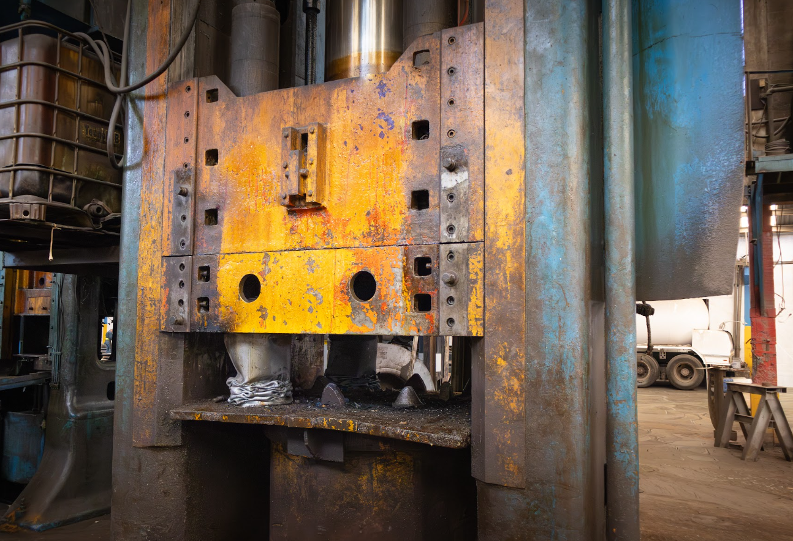

Un cilindro fuera de servicio sigue siendo un riesgo si no se maneja correctamente. Por eso operamos un centro dedicado a la recepción, destrucción certificada y reciclaje de recipientes de Gas L.P. que ya cumplieron su ciclo de vida. Este servicio cierra el ciclo completo de nuestra industria: fabricamos recipientes seguros y, cuando llega el momento, garantizamos que su retiro se haga conforme a la normativa vigente, sin representar un riesgo para las personas ni para el entorno.

Se reciben los cilindros fuera de servicio y se registran para su trazabilidad.
Se verifica el estado del recipiente y se descarta cualquier residuo de gas remanente.
El cilindro se inutiliza de forma permanente conforme a la normativa aplicable.
El material resultante se envía a reciclaje, reduciendo el impacto ambiental del proceso.
Operamos este servicio bajo criterios de seguridad industrial y cumplimiento normativo, documentando cada recipiente destruido para garantizar trazabilidad total del proceso.
Contáctenos para coordinar la recepción y destrucción certificada de sus recipientes.
Contáctanos